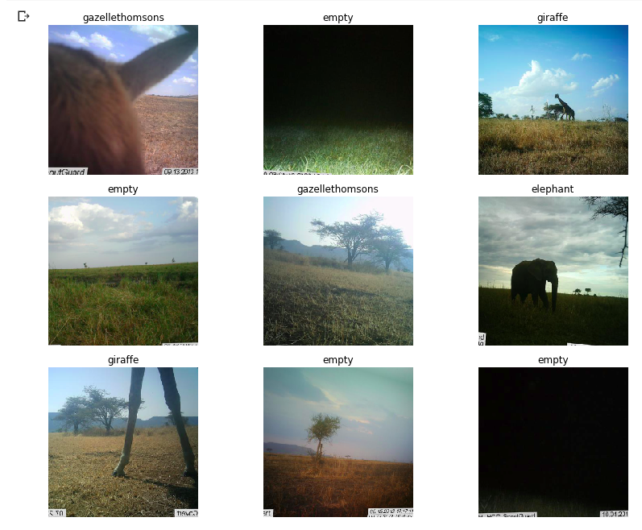

Snapshot Serengeti - Working with Large Image Datasets
Driven Data launched a competition around the Snapshot Serengeti database - something I’ve been intending to investigate for a while. Although the competition is called “Hakuna Ma-data” (which where I come from means something like “there is no data”), this is actually the largest dataset I’ve worked with to date, with ~5TB of high-res images. I suspect that that’s putting people off (there are only a few names on the leaderboard), so I’m writing this post to show how I did an entry, run through some tricks for dealing with big datasets, give you a notebook to get started quickly and try out a fun new tool I’ve found for monitoring long-running experiments using neptune.ml.Let’s dive in.
The Challenge
The goal of the competition is to create a model that can correctly label the animal(s) in an image sequence from one of many camera traps scattered around the Serengeti plains, which are teeming with wildlife. You can read more about the data and the history of the project on their website. There can be more than one type of animal in an image, making this a multi-label classification problem.

Some not-so-clear images from the dataset
The drivendata competition is interesting in that you aren’t submitting predictions. Instead, you have to submit everything needed to perform inference in their hidden test environment. In other words, you have to submit a trained model and the code to make it go. This is a good way to practice model deployment.
Modelling
The approach I took to modelling is very similar to the other fastai projects I’ve done recently. Get a pre-trained resnet50 model, tune the head, unfreeze, fine-tune, and optionally re-train with larger images right at the end. It’s a multi-label classification problem, so I followed the fastai planet labs example for labeling the data. You can see the details of the code in the notebook (coming in the next section) but I’m not going to go over it all again here. The modelling in this case is less interesting than the extra things needed to work at this scale.
Starter Notebook
I’m a big fan of making data science and ML more accessible. For anyone intimidated by the scale of this contest, and not too keen on following the path I took in the rest of this post, I’ve created a Google Colab Notebook to get you started. It shows how to get some of the data, label it, create and train a model, score your model like they do in the competition and create a submission. This should help you get started, and will give a good score without modification. The notebook also has some obvious improvements waiting to be made - using more data, training the model further…..
Training a quick model in the starter notebook
The code in the notebook is essentially what I used for my first submission, which is currently the top out of the… 2 total submissions on the leaderboard. As much as I like looking good, I’ll be much happier if this helps a bunch of people jump ahead of that score! Please let me know if you use this, so that I don’t feel that this wasn’t useful to anyone?
Moar Data - Colab won’t cut it
OK, so there definitely isn’t 5TB of storage on Google Colab, and even though we can get a decent score with a fraction of the data, what if we want to go further? My approach was as follows:
- Create a Google Cloud Compute instance with all the fastai libraries etc installed, by following this tutorial. The resultant machine has 50GB memory, a P100 GPU and 200GB disk space by default. It comes with most of what’s required for deep learning work, and has the added bonus of having jupyter + all the fastai course notebooks ready to get things going quickly. I made sure not to make the instance preemptible - we want to have long-running tasks going, so having it shut down unexpectedly would be sad.
- Add an extra disk to the compute instance. This tutorial gave me the main steps. It was quite surreal typing in 6000 GB for the size! I mounted the dist at
/ss_ims- that will be my base folder going forward. - Download a season of data, and then begin experimenting while more downloads. No point having that pricey GPU sitting idle!
- Train the full model overnight, tracking progress.
- Submit!
Mounting a scarily large disk!
I won’t go into the cloud setup here, but in the next section let’s look at how you can track the status of a long-running experiment.
Neptune ML - Tracking progress
I’d set the experiments running on my cloud machine, but due to lack of electricity and occasional loss of connection I couldn’t simply leave my laptop running and connected to the VM to show how the model training was progressing. With so many images, each epoch of training took ages, and I had a couple of models crash early in the process. This was frustrating - I would try to leave it going overnight but if the model failed in the evening it meant that I had wasted some of my few remaining cloud credits on a machine sitting idle. Luckily, I had recently seen how to monitor progress remotely, meaning I could check my phone while I was out and see if the model was working and how good it was getting.
Tracking loss and metrics over time with neptune.ml
The process is pretty simple, and well documented here. You sign up for an account, get an API key and add a callback to your model. This will then let you log in to neptune.ml from any device, and track your loss, any metrics you’ve added and the output of the code you’re running. I could give more reasons why this is useful, but honestly the main motivation is that it’s cool! I had great fun surreptitiously checking my loss from my phone every half hour while I was out and about.
Tracking model training with neptune
Where next?
I’m out of cloud credits, and as an ‘independent scientist’ my funding situation doesn’t really justify spending more money on cloud compute to try a better entry. If you’d like to sponsor some more work, I may have another go with a properly trained model. I did manage to experiment on using more than the first image in a sequence, and using Jeremy Howard’s trick of doing some final fine-tuning on larger images - would be interesting to see how much these improve the score in this contest.
I hope this post encourages more of you to try this contest out! As the starter notebook shows, you can get close to the top (beating the benchmark) with a tiny fraction of the data and some simple tricks. Give it a try and report how you do in the comments!